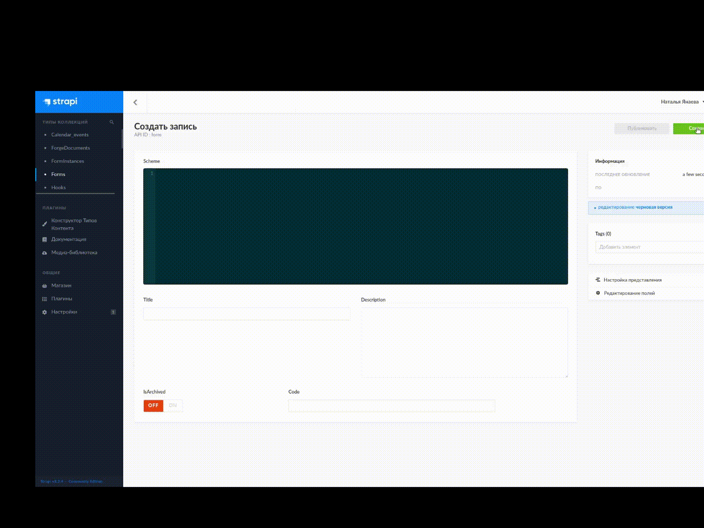
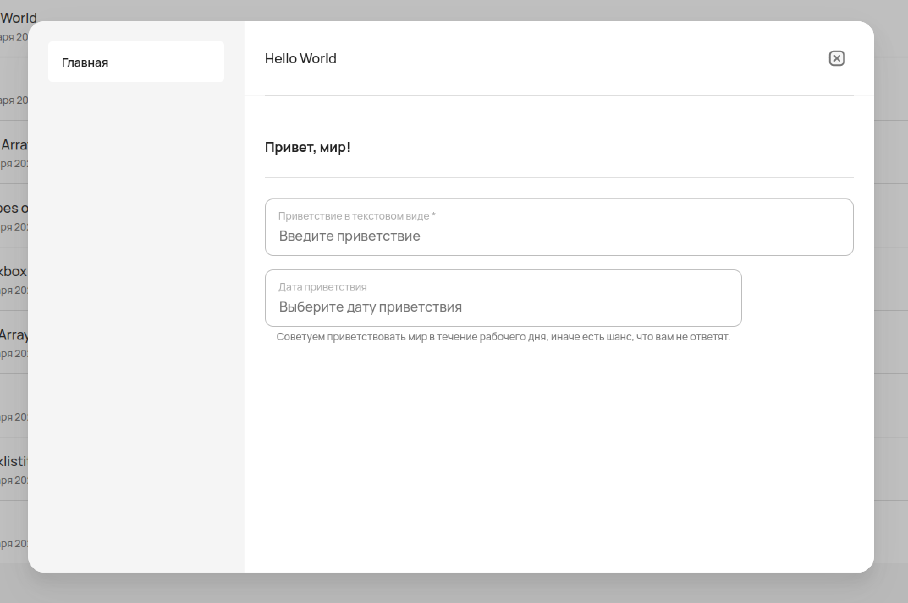

Создание формы¶
Задание формы в конфигураторе¶
Для создания формы в конфигураторе надо перейти на вкладку Forms:

Чтобы создать форму, нажмите на кнопку в правом верхнем углу страницы.
После этого перед вами открывается окно создание формы:
Это основное рабочее пространство, в котором записывается JSON-схема.
Здесь записывается название формы, которое будет отображаться в конфигураторе и клиентском приложении.
В это поле стоит записывать краткое описание формы, которое может пояснять её необходимость.
Чтобы форма опубликовалась в разделе форм в клиентском приложении, в этом пункте надо добавить элемент
customForm.После того, как все поля были заполнены, форму необходимо сохранить.
Эта кнопка позволит опубликовать заданную форму.
JSON-схема формы¶
{
"id": "string (uuid?)",
"title": "string",
"properties": {
"FIELDNAME": { "..."
},
}
},
"required": "[ FIELDNAMES ]",
"order": "[ FIELDNAMES ]",
"dependencies": {
"FIELDNAME_0": "[OTHER_FIELDNAMES]"
}
}
id — поле, необходимое для идентификации схемы формы.
title — заголовок формы.
properties — список полей формы:
FIELDNAME — название поля, которое задается пользователем.
required — список полей, обязательных к заполнению
order — порядок следования полей в форме.
Можно указывать не все поля, в таком случае оставшиеся могут отобразиться в случайном порядке.
dependencies — список зависимых полей.
Если заполнено поле FIELDNAME_0, то поля OTHER_FIELDNAMES тоже должны быть заполнены.
Атрибуты компонентов формы¶
Работа с формами заключается в правильном использовании компонентов формы. Атрибуты описанные ниже подходят не для всех компонентов.
Чтобы посмотреть, как себя ведёт какой-то конкретный компонент, зайдите в раздел Компоненты формы.
Список основных атрибутов:
type— выбор компонента.title— название поля, отображаемое в форме.description— описание поля. Отображается как заглушка поля в форме. Подходит для полей:default— значение поля по умолчанию. На данный момент только для выбора статуса.enum— список доступных значений.enumNames— список меток для значений из поляenum, отображающихся в форме.minItems— минимальное количество выбранных элементов для того, чтобы заполненная форма считалась корректнойmaxItems— максимальное количество выбранных элементов для того, чтобы заполненная форма считалась корректнойminLength— минимальное количество символов в поле для того, чтобы заполненная форма считалась корректнойmaxLength— максимальное количество символов в поле для того, чтобы заполненная форма считалась корректнойitems— множественный выбор из доступных значений. Иначе — возможность добавлять элементы заданного типа.
Пример формы¶
Эта форма начинается с атрибутов, в которых:
задаётся название —
title,порядок отображения компонентов —
order,список обязательных компонентов —
required.
"order": [
"Hello World!"
],
"title": "Hello World Form",
"required": [
"Hello World!"
]
Далее в properties прописываются компоненты с необходимыми атрибутами:
"properties": {
"Hello World!": {
"order": [
"textField",
"dateField"
],
"required": [
"textField",
"dateField"
],
"type": "object",
"title": "Привет, мир!",
"properties": {
"textField": {
"type": "text",
"title": "Приветствие в текстовом виде",
"description": "Введите приветствие"
},
"dateField": {
"type": "date",
"title": "Дата приветствия",
"description": "Выберите дату приветствия",
"helperText": "Советуем приветствовать мир в течение рабочего дня, иначе есть шанс, что вам не ответят."
}
}
}
}
В клиентском приложении эта форма будет выглядеть следующим образом:
Подробнее о компонентах, которые использовались в этой форме: